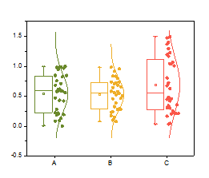

Boxdiagramme
BoxChart-Graph
|
Boxdiagramm
|
Boxdiagramm mit Überlagerung der Datenpunkte
|
Boxdiagramm mit Kurve der Normalverteilung
|
 |
|
 |
Datenanforderungen
Sie brauchen eine oder mehrere Arbeitsblattspalten, um solch ein Diagramm zu erstellen.
Diagramm erstellen
Boxdiagramme
- Wählen Sie die gewünschten Daten aus.
- Wählen Sie im Menü .
- oder
- Klicken Sie auf die Schaltfläche Boxdiagramm in der Symbolleiste 2D-Grafiken.
Boxdiagramm mit Überlagerung der Datenpunkte
- Wählen Sie die gewünschten Daten aus.
- Wählen Sie im Menü .
Boxdiagramm mit Kurve der Normalverteilung
- Wählen Sie die gewünschten Daten aus.
- Wählen Sie im Menü .
Weitere Einzelheiten zum Erstellen und benutzerdefinierten Anpassen finden Sie auf der Seite zum Boxdiagramme erstellen.
Vorlage
Boxdiagramm BOX.OTP
Boxenüberschneidung: BOX+DATA+OVERLAP.OTP
Box Normal: BOX+DATA+OVERLAP.OTP
Die drei oben genannten Vorlagen sind im Origin-Programmordner installiert.
Hinweise
- Jede Y-Datenspalte wird in einer separaten Box dargestellt. Die Spaltennamen und Beschriftungen liefern die Hilfsstrichsbeschriftungen der X-Achse. Standardmäßig wird die Box durch das 25. und das 75. Perzentil bestimmt. Die Whisker werden durch das 5. und das 95. Perzentil bestimmt.
- Wenn Sie mehrere Boxen haben, können Sie auf der Registerkarte Gruppe die Option Untergruppierung aktivieren. Sie können auch direkt ein gruppiertes Boxdiagramm erstellen, entweder aus Indexdaten oder Rohdaten.
- Es werden viele Variationen unterstützt, wie z. B. Intervall- und Punkt-Intervalldiagramme, Balkendiagramme, Box- oder Balkendiagramme mit normalverteilter Kurve, Box- oder Balkendiagramm mit sich überschneidenden Datenpunkten.